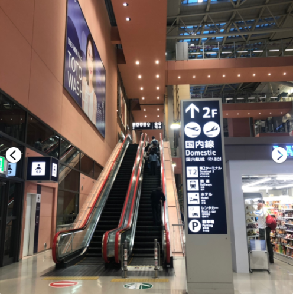
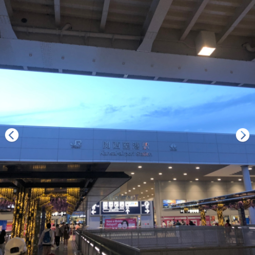
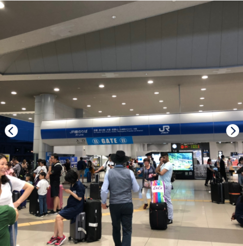

Kansai Airport (KIX) to Kyoto
Haruka

The JR Haruka Limited Express takes around 70 minutes to get from Kansai Airport to Kyoto and there are departures every 30 minutes. It is the quickest way and it’s covered by the Japan Rail
Pass.
For those without the pass, tickets cost 2,850 yen (for non-reserved seats) and 3,500 yen (for reserved seats).
The earliest Haruka service from Kansai Airport is 6:30 am (or 6:40 on weekends and holidays) and the latest is at 22:16. From Kyoto Station, the earliest service is at 5:46 am and the latest is at 20:15.
Kansai Airport has two terminals. Terminal 1 (we land here), the main terminal, is housed in a long, modern building and serves both domestic and international flights by regular airlines. The railway station is located directly adjacent to it. Added in 2012 in a more remote, spartan building, terminal 2 serves low-cost airlines (LCCs). It has fewer bus connections and no train service, and is connected to terminal 1 and the railway station by a free shuttle bus.
Japan-Guide: different ways to get out of Kansai Airport Link
小红书日本自由行🇯🇵关西ICOCA&Haruka直白解说‼️
HARUKA其实就是JR的机场快线
🔔套票可以直接刷进JR站，千万别刷卡，套票在出站的时候是要回收的。提前拍照留念。
🔔Haruka默认自由席（保证有座位，加钱）
🔔别上错车厢，自由席票不能去指定席，会有列车员工来验票。
🔔同一个站台的班车可能是去不同地方的。列车头尾都有员工，靠站时间有个5-15min。初来建议大家上车前都问一下列车员是不是这班车。
🔔别低头一个人研究攻略地图‼️张嘴多问人‼️我刚到的时候每搭乘一班车都一定在车头（尾）跟员工确定一下方向‼️
流程
1.下飞机后会坐一段轨道车，下车后跟着人群走直到报关处。

2.取了行李出来右手边上二楼，然后左转进入E口，朝着 JR 一直走就行了。

3.最后一步是关键❗️❗️❗️就是找到JR Ticket office进去买票，售票人员会中文哦，完全不用担心。有icoca卡和Haruka的那种套票，一起3600日元。Haruka票价是1600（图一），直接刷icoca的话要3300，超便宜的，省钱了～

4.工作人员会告诉你在B入口，4站台上车，进站后直接刷Haruka卡就行，最后一班车是10:16，终点站就是京都，所以不用怕坐过站。

Kyoto to Osaka
京都往返大阪有以下5种方式：JR京都线（JR西日本）、阪急电铁、京阪电车、近铁电车、新干线。其中在各个铁路路线中，又以JR京都线、阪急电铁、京阪电车这三种最为常见。其他部份如近铁电车及新干线，因为新干线太贵、近铁电车比较耗时，且还需要在奈良转车，所以都不推荐。
1、搭乘JR京都线（JR西日本）
JR京都线是东海道山阳本线上大阪到京都这一段路的通称，全长42.8公里。
（1）车次
JR京都线共有3种车次，依速度分为：「普通」、「快速」、「新快速」。
新快速：列车最快的，因为停的站数最少；只停靠 大阪、新大阪、高槻、京都（约30分钟）
快速：比普通车停的站少一些；全程停靠9 站（约 45分钟）
普通：每站都停，所以搭乘时间是最久的（约 60分钟）

（2）大阪转乘处
JR大阪駅（梅田地区）和R新大阪駅（新大阪地区）
梅田地区：大阪的交通枢纽，许多大众运输的转乘处都在这（例如JR，阪急，阪神，大阪市地铁） 不过也不用太担心啦~ 指标标示的都满清楚的，一般都会在地铁梅田站换乘，出站以后跟著指标走就对啦~
新大阪地区：位于日本大阪府大阪市淀川区西中岛五丁目，是东海旅客铁道（JR东海）、西日本旅客铁道（JR西日本）、大阪市营地下铁的铁路车站，与大阪站属两个不同的车站，大阪站位于大阪市中心地区，位处新大阪站以南约3公里。
（4）如何购票
购买车票时，先投钱 → 选人数 → 选票价→车票就出来了（日本的自动票券机都是这样操作的）
使用方式：JR京都线票券（与台铁的票券是一样的，直接投入匝口就可以了）

详细图解步骤： 链接
Osaka to Kansai Airport
"Haruka" limited express trains connect Kansai Airport with Tennoji (30 minutes, 1740 yen by unreserved seat, about 2300 yen by reserved seat) and Shin-Osaka Station (50 minutes, 2380 yen unreserved, about 2900 yen reserved). With the Icoca & Haruka ticket, available to foreign tourists only, you can travel by non-reserved seat on the Haruka between the airport and Osaka for only 1120 yen (to Tennoji) or 1320 yen (to Shin-Osaka) if you own or purchase an Icoca prepaid card. Link